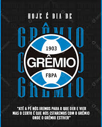

O Grêmio Foot-Ball Porto Alegrense foi fundado em 15 de setembro de 1903 por Cândido Dias da Silva, é um dos maiores clubes do Brasil e da América do Sul. Conhecido como Tricolor Imortal, conquistou o Mundial (1983), três Libertadores (1983, 1995, 2017) e múltiplos títulos nacionais, incluindo Brasileirões e cinco Copas do Brasil.
"Imortal Tricolor" é um dos clubes mais vitoriosos do continente.